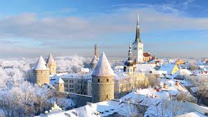

The holy land has much to offer its tourists. There are many museums, historical sites, natural wonders, and much more. Apart from having the city of Jerusalem where Jesus was born, there are so many fascinating places that date back to centuries. If you are visiting Israel in December, there are many things that you can do at this time of the year. There are many festivals and events that take place since Hanukkah and Christmas is celebrated. If you have the question in your mind, what season is it in Israel in December? Then you don’t have to wonder anymore. It is definitely winter at this time of the year. It will most certainly be cold but that also makes festivals like Christmas so much better.
Hanukkah or the festival of lights continues for about 8 days. If you want to experience the festivals in Israel in December, then you shouldn’t miss out on this. If you walk down the streets of Jerusalem’s old city or the neighborhood of Nachlaot, you will be able to see the menorahs which are lit and placed inside glass boxes and are kept on windowsills. You can also visit Mamilla Alrov Mall or the Western Wall for a public lighting event. There are special events that take place all around the country if you want to enjoy the lights.
There are some mountain peaks that get snowfall on some days during the year. Jerusalem is more than likely to experience snow as it gets cold. If there is enough snowfall then you can head to Mt. Hermon which lies at the tip of the North side of the country. The vertical drop from Mt. Hermon is just 1,552 feet which makes it ideal for beginners and children. You can also go sledding or tubing. This should definitely be a part of your bucket list if you are wondering what to do in Israel in December
If nightlife is what interests you, then you should definitely stop by the city of Tel Aviv. You can find anything you need for a good night out. You can find endless clubs, bars, theaters, museums, concert halls, and dance centers. If you have the time on your hands then the city can keep you up the entire night. This is one of the best things you can do if you are visiting Israel in December 2022. Spend the night meeting new people, getting VIP passes and enjoying drinks.
